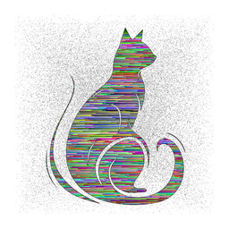
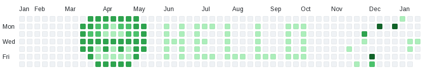

[PDF] Project Mangoapple: WiFi Pineapple on Alternative Hardware
[PDF] Deauth n' Crack: An introduction to Wireless Attacks on WPA2
[PDF]
[ENTRY] Remote Desktops Entry
Methods of Acheiving A Graphical Remote Desktop
A entry in transcripts from the ether, that goes into what protocols and software are available for remote desktop sessions.
[REPO] Transcripts From The Ether[ENTRY] Remote Desktops Entry
[PDF] CVE-2026-24061 (InetUtils telnetd) an Analysis
[PDF] Setting up Metasploitable3
[PDF]
[ UNSORTED ]
[ UNSORTED ]
Sorting an image based on pixel values
This is a simple project that dives into the basics of raw image manipulation, by sorting the pixels within an image, based on brightness.
[REPO] Sort[a] Cat

[PDF] Creating a SSH Tunel using TUN interfaces
[PDF]
[REPO] Github History Graffiti
Github Contribution History Graffiti
This is a very simple stupid history graffiti program. This means and allows you to put text and put "Graffiti" on your github contribution history.

[REPO] Github History Graffiti
[PDF] CVE-2025-55182(React2Shell) an Analysis
[PDF] How to bypass Windows OOBE-NRO (as of Dec 2025)
[PDF] Installing Linux On A Chromebook
| Post Stats (In Days) | |
|---|---|
| Total number of posts: | |
| Average between posts: | |
| Longest time between posts: | |
| Shortest time between posts: |